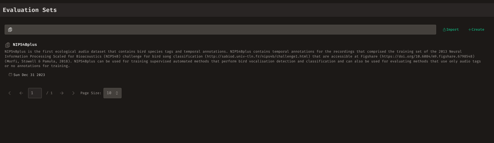
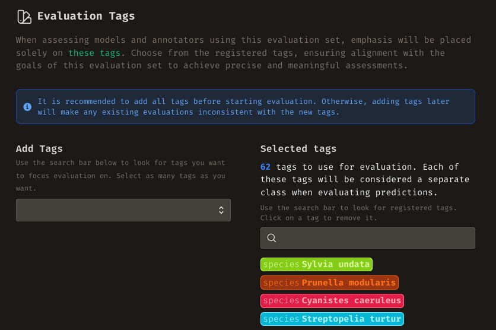
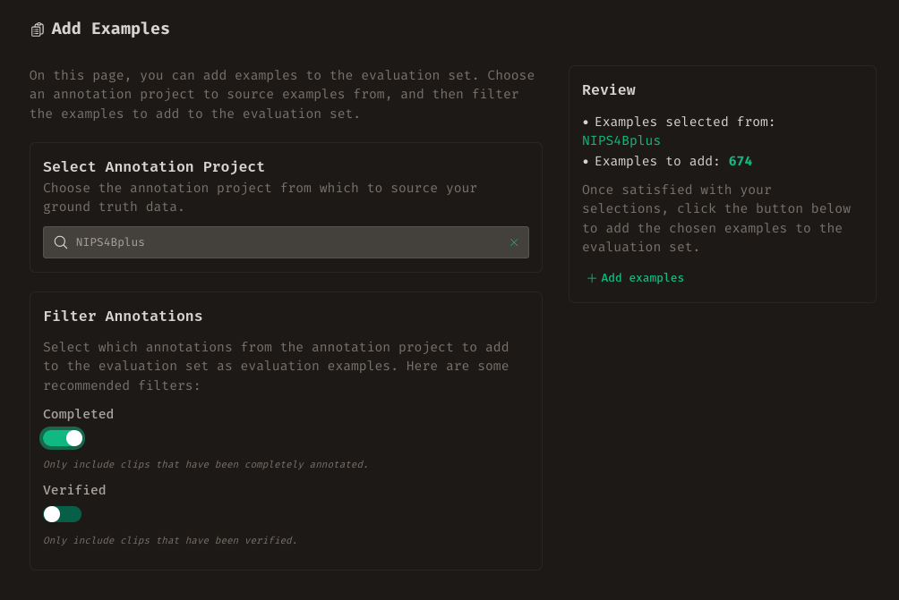
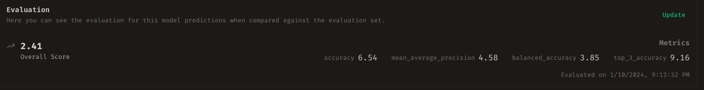
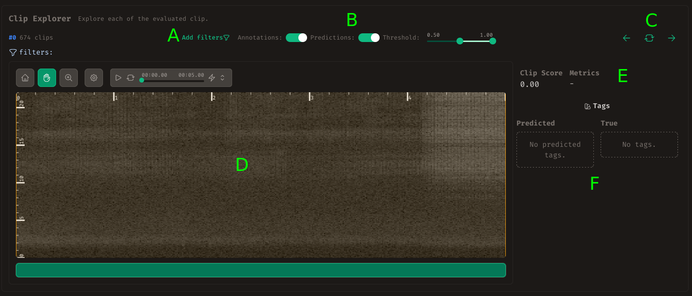

Evaluation¶
While the primary focus of Whombat revolves around annotation work, we acknowledge that annotation is just one facet of the ML development workflow. Whombat aims to enhance this workflow by not only providing tools for generating annotations but also offering features to comprehend the performance of ML models trained with these annotations.
In this section, we will delve into leveraging the annotations created through your efforts to evaluate and explore ML model and annotator predictions. The topics we will cover include:
- Understanding predictions
- Evaluation Sets
- Creating or Importing an Evaluation Set
- Selecting Evaluation Tags
- Adding Examples to the Evaluation Set
- Importing a Model Run
- Evaluating the Model Run
- Exploring the Predictions
Understanding Predictions¶
In Whombat, predictions share similarities with annotations. Like annotations, predictions exist in two forms: sound event and clip predictions. Predicted sound events encompass a Region of Interest (RoI) suspected to contain a relevant sound, along with associated tags. On the other hand, clip predictions consist of tags that potentially match the audio content of the clip, along with the predicted sound events within the clip. Noteworthy differences from regular annotations include a somewhat philosophical stance—predictions are generally considered less trustworthy than annotations. Additionally, predictions often come with a quantification of certainty.
In Whombat, sound event predictions feature an accompanying confidence score, aiming to quantify the level of certainty the ML model or user has regarding the presence of that sound event. Predicted tags also carry a confidence score. For instance, a predicted sound event could be associated with two tags: "sound:Airplane" with a confidence score of 80% and "sound:Human" with a confidence score of 20%. Importantly, this combination doesn't create a contradiction; instead, it provides nuanced insights into the confidence levels associated with each predicted tag.
Sets of predictions are organized into Model Runs or User Runs. These collections gather predictions created with the same model or by the same user, under identical configurations and singular conditions. These prediction sets can then be evaluated against the ground truth.
Evaluation Sets¶
In the evaluation process, it's common to assess a model or user by comparing their predictions against a set of known examples. To facilitate this, Whombat has organized the entire evaluation module around the concept of evaluation sets.
An evaluation set is essentially a curated collection of fully annotated audio clips. These clips serve as benchmark examples for comparing predictions. Evaluation sets can be sourced from existing annotation projects or directly imported from other sources. Similar to annotation sets, evaluation sets often concentrate on specific types of sounds. Therefore, an evaluation set is associated with a set of tags that define the focus areas for assessment.
Each evaluation set should be tailored to a specific task—a particular problem in computer audition being evaluated. This determination not only defines the types of expected predictions but also, crucially, shapes the evaluation criteria for assessing these predictions.
Supported Tasks
In Whombat, we currently support four different types of computer audition tasks:
-
Clip Classification: In this task, the user or model is expected to correctly predict the class to which an audio clip belongs. The true class is determined by the tag attached to the clip.
-
Clip Tagging: In this task, the user or model is expected to predict a set of tags attached to an audio clip.
-
Sound Event Classification: For this task, the user or model is expected to correctly predict the class to which each sound event in the evaluation set belongs. The true class is determined by the tag attached to the sound event. In this scenario, it is expected that the user/model is provided with the Region of Interest (RoI) of the sound event for inference.
-
Sound Event Detection: In this task, the user or model is expected to correctly locate each relevant sound event and predict the correct tag set for each sound event. This involves estimating the RoI and predicting the tag set, making it a simultaneous localization and classification problem.

To begin working with an evaluation set, click on the Evaluation button on the sidebar (labeled C in the figure) or use the navigation cards on the homepage. Here, you'll find a list of existing evaluation sets. You can search for a particular set using the search bar or create a new one. Clicking on a set provides detailed insights into its contents.

Creating or Importing an Evaluation Set¶
To create a new evaluation set, click on the +Create button at the top right. You will be prompted to provide a name, a description and the task for the evaluation set.
Alternatively, if you already have an evaluation set saved in an AOEF file, you can import it directly by clicking on the Import button and selecting the appropriate file.
Creating AOEF files
For an efficient way to generate AOEF files with your own data, we recommend using the soundevent package.
This package offers user-friendly functions aligned with Whombat's data structure, facilitating a seamless integration process.
Once created or imported, you will be redirected to the Evaluation Set Dashboard for further management and exploration.
The Evaluation Set Dashboard¶
The Evaluation Set Dashboard offers a concise summary of key information related to the evaluation set and its associated elements. The overview section provides a snapshot, displaying the count of registered examples, the number of tags utilized for evaluation, and the tally of model runs and user sessions imported for this specific evaluation set.
Within the dashboard, you'll find details about the most recent model and user runs, along with insights into their respective evaluations. Additionally, information about the evaluation set, including its description and name, is readily accessible and editable.
Downloading the Evaluation Set
Clicking the Download button in the dashboard allows you to download the evaluation set information. This download includes details about the contained clips and their corresponding ground truth annotations. This information proves valuable for extracting the corresponding audio material and running a model to create a Model Run.
Deleting the Evaluation Set
Exercise caution when using the Delete button, as it will permanently remove the evaluation set. This action includes the deletion of any associated model and user runs, along with their respective evaluations. Ensure you are certain about this decision or have appropriate backups in place.
Selecting Evaluation Tags¶
To manage evaluation tags for the current evaluation set, click on the Tags button in the navigation header. You'll be redirected to a page where you can easily handle evaluation tags. On the right column, you'll find all the currently registered evaluation tags. Click on a tag to remove it. Use the search bar on the left column to find registered tags, create new ones, and select a tag to add it to the evaluation set.

Selecting a Good set of Evaluation Tags
Selecting evaluation tags is a crucial step in assessing predictions. Annotated data or predictions may have additional tags that aren't directly relevant to the evaluation task. These tags define which ones will be used for assessment.
The usage of tags depends on the evaluation task. For instance, in the clip classification task, the tag set is considered the possible classes a clip can take. Ensure you choose a tag set aligned with your evaluation goals.
Updating the tag set
It's recommended to select a comprehensive set of tags for evaluation from the beginning. Evaluations depend on the tag set, and assessments made with different tag sets aren't directly comparable. If you need to change the tag set, update all evaluations accordingly.
Adding Examples¶
To add examples to the evaluation set, click on the "Examples" button in the navigation header. Adding examples involves two steps. First, select an annotation project as the source for examples. The added examples are clip annotations from the chosen project. Then, precisely choose which clips to add from the selected project by applying filters to the annotations. For instance, it's recommended to add only annotations marked as fully annotated (completed). After reviewing the number of examples to add, click Add when satisfied.

Importing a Model Run¶
After completing the setup, you are ready to import and evaluate model runs to explore their predictions. Navigate to the "Model Runs" tab in the navigation header to view the list of all registered model runs. Click on the import button next to the search bar and select the file containing the model run predictions.
Data Format
Model runs are expected to be in AOEF format. For more information on this format, refer to soundevent.
Creating your Model Runs
It's recommended to use the soundevent package to format your data.
This package provides tools to structure your data in a way that closely resembles Whombat data and has handy functions to export the data directly into AOEF format.
Evaluating the Model Run¶
Upon selecting or importing a model run, you will be directed to the model run detail page. At the top of the page, you'll find information about the model run evaluation. Note that when a model run is created, it is not automatically evaluated. If the evaluation is missing, a message will be displayed, and you can initiate the evaluation process by clicking on the "Evaluate" button. If the evaluation has already been conducted, you can choose to "Update" it, especially if there have been changes in the evaluation tag set or refinements in the annotations of the evaluation set examples.
The evaluation overview provides the overall score of the evaluation along with additional computed metrics for a comprehensive assessment.

Exploring the Predictions¶
Directly below the evaluation overview, you'll find the Evaluation Explorer—a powerful tool to delve into and compare predictions and annotations for each audio clip.

To focus on specific clips, utilize the filter menu (labeled A in the figure). Select a filter type and configure it according to your needs. All applied filters will be visible in the filter bar below; click on a filter badge to remove it.
Fine-tune the visualization using the controls at B. Toggle between displaying predictions and annotations, and set the threshold range to select which predictions to visualize. Only predictions within this score threshold will be shown.
Navigate effortlessly through different clips with the controls in section C. Move to the next or previous clip, or opt for a random selection by clicking the central button.
The explorer presents the clip's spectrogram, showcasing predictions and annotations. Refer to the Navigating the Spectrogram section for guidance on moving around the spectrogram.
Individual clip scores and additional metrics are detailed in section E, while predicted and ground truth tags are displayed for easy comparison in section F.